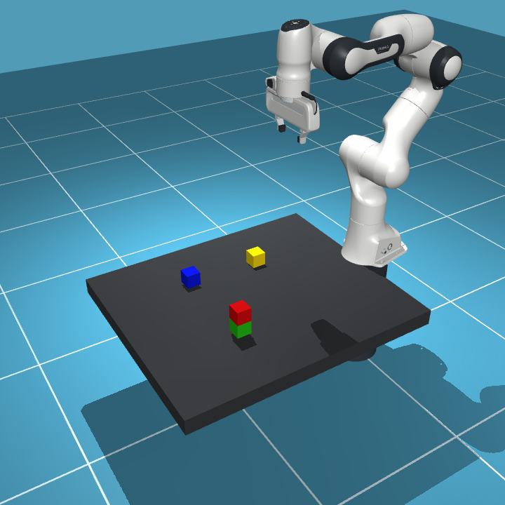

2026-09-27 · 本地 MuJoCo 3.10.0 · Oracle观察 · 执行器控制 · 严格无weld抓取
CABTO Blocks P0
目标占用与抓取参数偏差：该改模型还是改策略？
不能算成128个独立泛化样本
2布局 × 4条件；含修复后的重复配置
旧单臂测试有3项既存命名问题
1. 固定协议与改变的因素
目标：在保持感知、机器人、控制器、接触阈值和评估规则不变的前提下，区分目标被其他方块占用与策略抓取点偏高45mm造成的失败。每种条件运行四种干预。
| 干预 | 动作模型 | 抓取策略 | 固定的其他部分 |
|---|---|---|---|
| 不修订 | stack 缺少目标Clear前提 | 原始偏移 | 相同初态XML、Oracle观测、细粒度API、已有清障技能、BT Expansion内核、动力学与物理验收 |
| 只修模型 | 仅增加 clear(support) | 保持原样 | |
| 只修策略 | 保持原样 | 目标偏移归零 | |
| 联合修订 | 增加Clear前提 | 目标偏移归零 |
- 目标占用通过初始场景XML叠放真实自由刚体产生；执行过程中没有修改物体qpos来移除障碍。
- 偏移在策略读取真实抓取坐标之后加入，实际改变approach/descend命令；没有篡改Oracle返回值或直接抛出“注入失败”。
Clear/On从几何和真实接触计算，不读取占用标签。所有组都预先具备unstack/put_table技能，模型组没有偷偷增加控制能力。- 正式BT规划器根据修订后的前提，选择“移除占用块→放回桌面→抓取目标块→叠放→HOME”，不是将拒绝执行记作任务成功。
协议：project/experiments/blocks_p0_protocol.json。实现：blocks_p0.py；入口：run_blocks_p0.py。
2. 开发、验证、留出结果
| 阶段 | 布局/目标配对 | 不修订 | 只修模型 | 只修策略 | 联合修订 |
|---|---|---|---|---|---|
| 开发 | 1布局；yellow→green | 1/4 | 2/4 | 2/4 | 4/4 |
| 验证准入 | 1布局；red→green | 1/4 | 2/4 | 2/4 | 4/4 |
| 首次留出 | 2布局；yellow→blue、green→red | 2/8 | 4/8 | 4/8 | 8/8 |
每布局包含无暴露故障、仅参数偏差、仅目标占用、两者同时出现四种条件。布局坐标和对象角色在执行前写入协议；留出配对未参与开发/验证。验证阶段用于候选准入，不当作最终泛化测试。
首次留出集中的逐类表现
| 条件 | 不修订 | 只修模型 | 只修策略 | 联合修订 |
|---|---|---|---|---|
| 无暴露故障 | 2/2 | 2/2 | 2/2 | 2/2 |
| 仅抓取偏差 | 0/2 | 0/2 | 2/2 | 2/2 |
| 仅目标占用 | 0/2 | 2/2 | 0/2 | 2/2 |
| 混合条件 | 0/2 | 0/2 | 0/2 | 2/2 |
“无故障”不是说模型完全正确。所有不修模型组仍缺Clear前提，只是在目标为空时未暴露这个缺陷。这里的标签是受控条件标签，不能当成动作模型的普适正确性标签。
四个布局各有8种不同的“场景＋模型＋策略”组合；每版64次执行只有32种不同组合。同一布局的条件相关，修复后还存在配置重复。因此不对8/8作大样本可靠性或100%泛化的推断。
3. 失败确实发生在哪里
抓取参数偏差
策略将抓取点提高45mm，夹爪真实闭合时左右指力均为0，细粒度API报告 No simultaneous two-finger force at closure。只增加Clear并不能修复；偏移归零后能够抓取、叠放、释放并回到HOME。
目标占用
缺Clear时，BT直接搬运目标块并尝试在已占用的支撑上放置，下降阶段产生约20.1–20.9mm TCP残差，远超过原有8mm阈值。模型增加Clear后，BT在抓取目标块之前先移除障碍，仍使用相同策略源码。
混合条件
只修策略会使最初的抓取成功，但随后暴露目标占用；只修模型仍在抓取阶段失败。只有两项干预一起完成才能达到目标。这说明一次最早失败可以遮蔽另一个缺陷，单次异常文本不足以覆盖全部问题。
这组现象支持“模型修订与策略修订承担不同职责”的机制，但两项干预联合有效一般不等于已经唯一识别两个独立物理根因。



4. 本轮能与不能宣称什么
能支持
- 存在一组真实物理情景，修模型和修策略的效果可以通过成对执行区分，且混合条件需两者共同处理。
- Clear前提修订可以改变BT的可执行行为，使现有清障技能被正确组合。
- 同一预设修订在两个未参与选择的布局和新配对上继续有效；旧正常条件没有退化。
- 成功episode中的完整符号迁移均通过，未出现weld激活记录。
不能支持
- 不是LLM/VLM自主发现。Clear谓词、候选前提、正确偏移、清障技能和四结果分类规则都是工程预设；本轮没有调用大模型。
- 不是先诊断再自主修复。归因在四组干预全部运行后，根据其成功布尔向量进行；8/8是干预响应与受控条件匹配，不是单次失败诊断准确率。
- 不是低成本主动实验选择。四组都跑，尚未学习如何以更少探针区分解释；不能将这四组花费省略。
- 不是真实失败现场恢复。每个干预从相同初始XML重新初始化；不是从已经碰撞或掉落的状态继续。
- 不是跨形状/材质/本体泛化。仍是同尺寸、同质量的四色块，4物体、3或5个高层动作；布局变化为厘米级而非大环境变化。
- 不是完整连续安全证明。验收覆盖堆叠、释放、HOME、速度、部分接触、支撑/干扰物最终位移及稳定窗口；未全面记录两个非当前目标物体间的所有接触，也未检查全部物体全程最大位移。连续轨迹文件记录TCP/关节角，不是完整物理状态录像。
5. 代码、测试和审计
新增独立目录 project/experiments/，旧控制文件仅增加可选的 scene_builder 构造参数，默认场景不变；保留用户已有的Cover/感知修改。
- 新增20项测试通过：物理Clear、Oracle只读、模型只改pre、策略有限程序、BT清障顺序、划分配对、匿名归因、禁止直接状态写入、冻结篡改拒绝及渲染/观察/关闭异常。
- v2冻结文件必须显式approved；检查候选与执行内容一致，检查证据结果哈希、源文件与清单；不能通过空对象跳过门禁。
- 每个动作执行前落盘，异常保留原始trace；基础设施无效试次单列，不计物理失败；渲染不参与物理成败。
- 本批v2全部64次trial_valid为真，未出现基础设施无效试次；两版源码快照哈希均通过审计。
- 旧
test_single_arm_rebuilt.py29项中26项通过，2失败、1错误：测试还引用potato，而用户当前Cover场景已改为pepper。该差异执行前已存在；没有为通过测试回改用户内容。
新实验测试日志 · 旧回归日志 · 独立汇总审计JSON
v2矩阵执行墙钟：开发21.19秒、验证18.94秒、同留出设置复核37.80秒，约77.93秒。这个计时不含前置源码快照、最终报告和开发成本，也不含全部初始化仿真时间；不能称作完整研究成本或用来直接估算真机时长。
6. 结果入口与复现约束
| 阶段 | v1 首轮证据 | v2 基础设施加固后的重复核查 |
|---|---|---|
| 开发 | 结果 | 摘要 · 冻结候选 |
| 验证 | 结果 | 摘要 · 准入候选 |
| 留出 | 首次结果 | 重复核查摘要 · 结果 |
入口支持development/validation/heldout，后两阶段必须传上一阶段的冻结产物；每次使用新输出目录。manifest.json 保存实际命令参数、Python/依赖版本、协议、全部导入项目源码和机器人资产哈希；source_snapshot/ 保存执行时版本。cases/ 保存场景XML、BT、策略、逐动作前后观测、API trace、接触汇总与图片。
执行环境使用现有CABTO Python 3.11.9，无需新安装。原始结果位于被Git忽略的 outputs/，不等于已经提交或备份；本轮没有Git提交。单独的初始基线及测试内部运行不纳入64/128次矩阵分母。
7. 下一轮最有价值的实验
- 把“预设正确候选”换成实际候选提出：允许模型从不含注入标签的观察、程序和反馈中提出多个前提/参数候选，先在开发数据上筛选，固定后进入全新留出布局。
- 加入竞争解释和弃权：例如抓取横向偏差、不可达、夹爪能力不足、目标拥挤但未被顶部占用，使“闭爪失败＝参数错误”的简单映射失效。
- 从固定4次干预转向预算控制：比较主动选下一个探针与固定全枚举，记录总仿真执行和重置成本。
- 扩展前先验证安全与组合：增加连续物体状态与接触监测，以及更多真实上游终态，不靠逐技能重置保证成功。
本轮回答了“这两类缺陷在现有物理底座上能否被分层干预区分”。下一轮才应回答“CABTO能否自己提出正确修订，并用更少交互找到它”。两者不能混成一个结果。